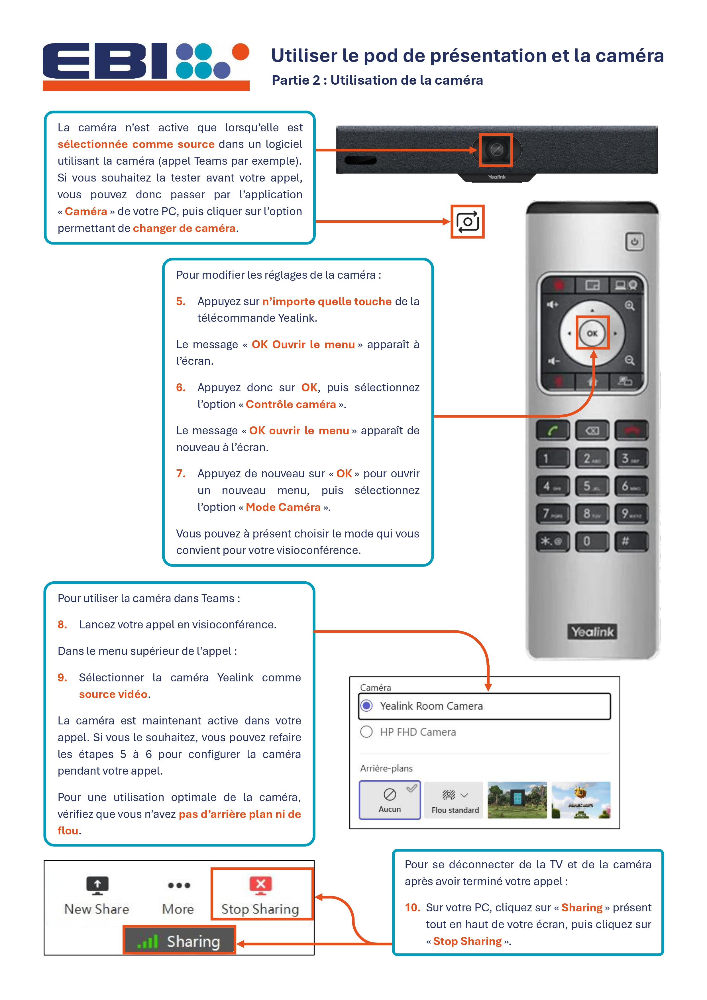
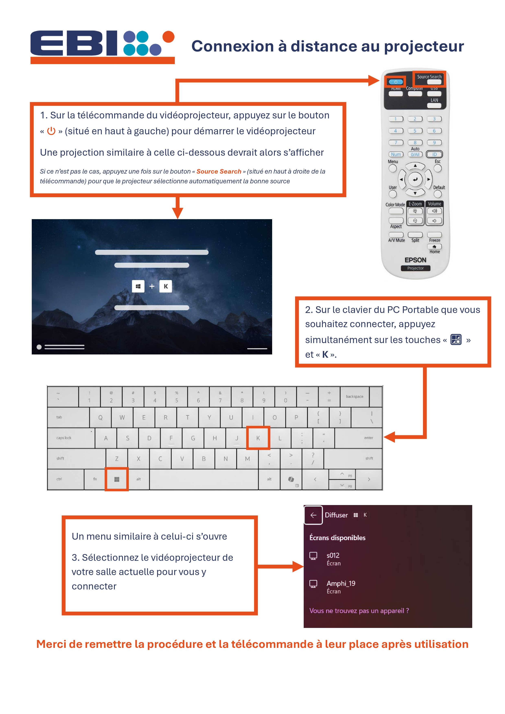
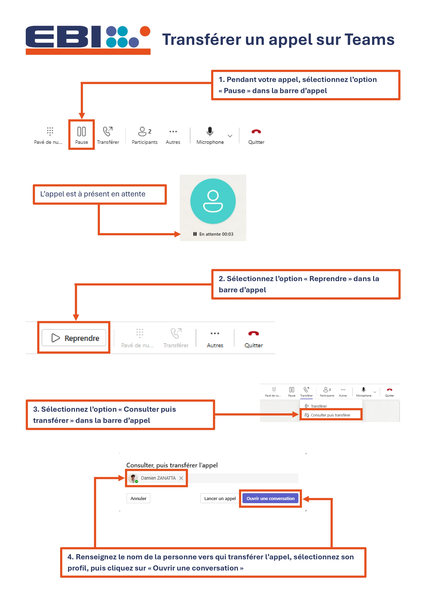
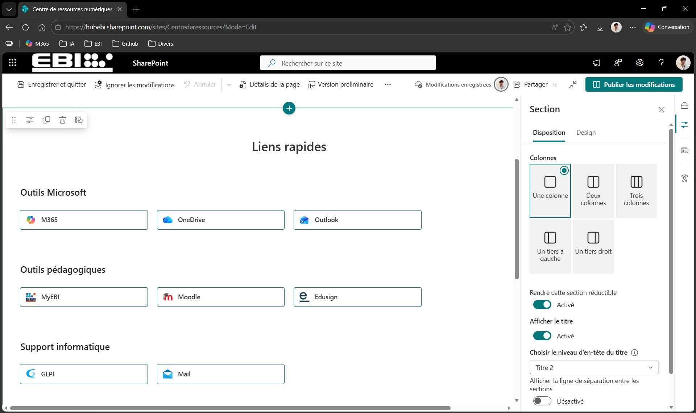
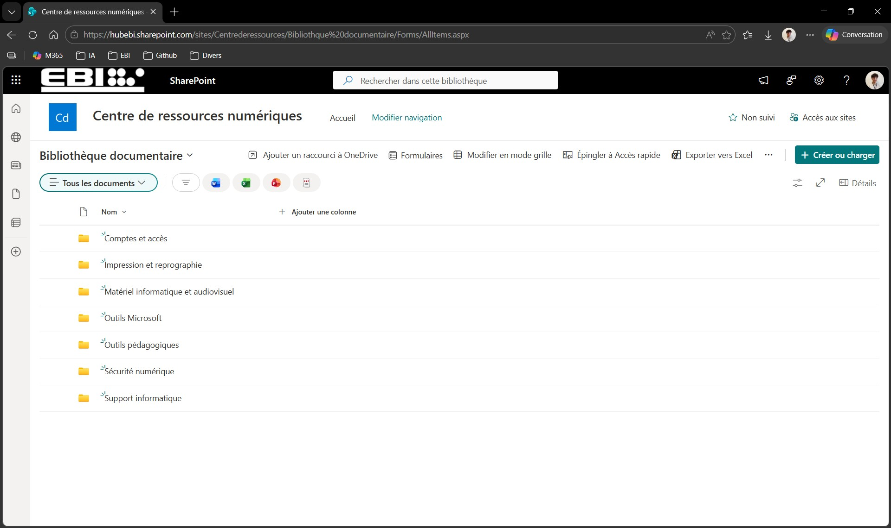
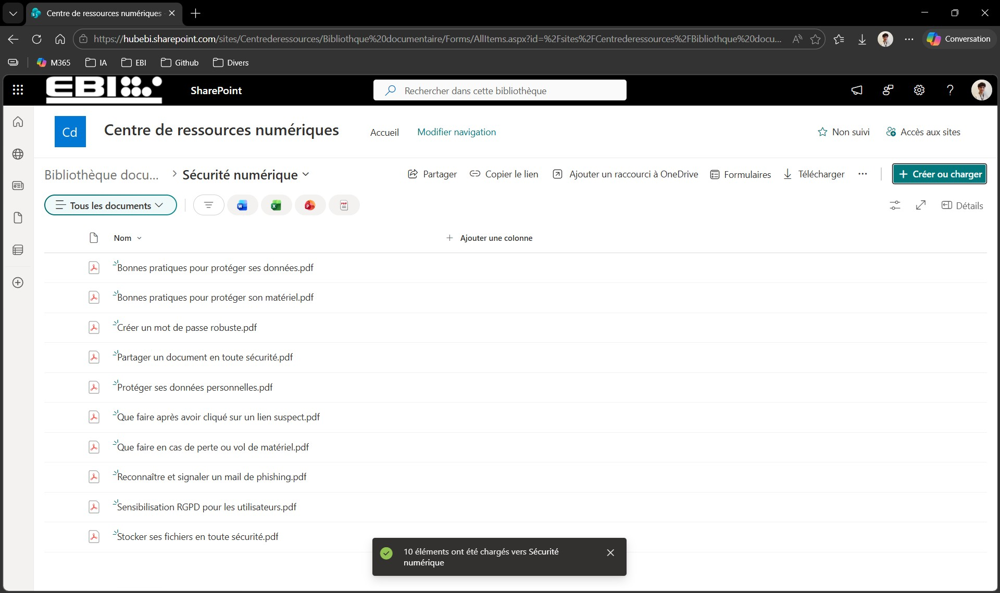

Centralisation de la documentation informatique (SharePoint)
Présentation
Dans le cadre de mon alternance au sein du service informatique de l’EBI, j’ai participé à la mise en place d’une base de connaissances Intranet sur SharePoint.
L’objectif était de centraliser la documentation informatique de l’établissement afin de faciliter l’accès aux procédures, aux tutoriels et aux informations techniques utiles aux utilisateurs et au service informatique.
Cette première version fonctionnelle sert de socle pour les futures évolutions : enrichissement des contenus, amélioration de l’interface et adaptation progressive selon les profils d’utilisateurs.
Objectifs
Mettre en place un espace SharePoint dédié à la documentation informatique interne.
Structurer une bibliothèque documentaire claire et exploitable.
Classer les documents par dossiers pour faciliter la recherche d’informations.
Valoriser les procédures déjà rédigées au sein du service informatique.
Créer une page d’accueil simple avec des liens rapides vers les outils courants de l’EBI.
Préparer une base de connaissances évolutive.
Environnement technique
Plateforme : Microsoft SharePoint Online
Environnement : Microsoft 365
Interface : navigateur web
Type de site : site SharePoint Intranet
Rôle attribué : propriétaire du site pour la configuration et l’organisation des contenus
Intervenants : service informatique de l’EBI et prestataire réseau DEiiS
Documents intégrés : procédures, tutoriels, bonnes pratiques et documentations techniques
Exemples de procédures
Avant la mise en place de la base de connaissances, j’avais déjà rédigé plusieurs procédures destinées à accompagner les utilisateurs dans l’utilisation du matériel et des outils numériques de l’établissement.
Ces documents ont servi d’exemples concrets pour alimenter le futur espace documentaire.



Cadrage du projet
Mon responsable informatique m’a fourni un document de cadrage afin de définir les attentes du projet, les contenus à intégrer et les évolutions envisagées.
Ce cadrage m’a permis d’identifier mon périmètre : organiser l’espace documentaire, préparer la page d’accueil, intégrer les documents et construire une première version exploitable. La configuration avancée des droits devait ensuite être traitée avec le prestataire DEiiS.
Point de départ : site SharePoint vide
Le prestataire réseau DEiiS a créé le site SharePoint et m’a attribué le rôle de propriétaire afin que je puisse effectuer les premières configurations.
Édition de la page d’accueil
J’ai commencé par structurer la page d’accueil avec un titre, une courte introduction et des liens rapides vers les outils courants utilisés à l’EBI.

Création de la bibliothèque documentaire
J’ai créé une bibliothèque documentaire dédiée à la base de connaissances, puis plusieurs dossiers afin de classer les documents par thème : procédures, tutoriels, bonnes pratiques et documentation technique.

Ajout de la bibliothèque sur la page d’accueil
Après la création de la bibliothèque, je l’ai intégrée directement sous les liens rapides pour éviter aux utilisateurs de devoir rechercher manuellement l’espace documentaire.
Importation des documents
Une fois la structure finalisée, j’ai importé les documents dans les dossiers correspondants et vérifié la cohérence du classement.

Résultats obtenus
La première version de la base de connaissances Intranet a été mise en place conformément au cadrage.
Page d’accueil personnalisée.
Bibliothèque documentaire créée dans SharePoint.
Dossiers structurés pour organiser les contenus.
Documents importés et classés.
Procédures internes valorisées dans un espace centralisé.
Socle documentaire prêt pour la mise en place des droits d’accès.
Compétences mobilisées
Gérer le patrimoine informatique
Organisation et valorisation de la documentation informatique interne.
Répondre aux incidents et aux demandes d’assistance et d’évolution
Mise à disposition de procédures facilitant le support utilisateur.
Développer la présence en ligne de l’organisation
Contribution à un espace Intranet structurant la présence numérique interne de l’établissement.
Travailler en mode projet
Prise en compte d’un cadrage, respect du périmètre et coordination avec les intervenants.
Mettre à disposition des utilisateurs un service informatique
Création d’un point d’accès centralisé aux procédures et documentations utiles.
Organiser son développement professionnel
Développement de compétences sur SharePoint, la structuration documentaire et la rédaction de procédures.
Bilan personnel
Cette réalisation m’a permis de mieux comprendre l’importance d’une documentation centralisée dans le fonctionnement quotidien d’un service informatique.
J’ai appris à structurer un espace SharePoint, à organiser une bibliothèque documentaire et à rendre les contenus plus accessibles aux utilisateurs.